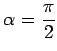

Logarithmische Spirale heißt eine Kurve, die alle Strahlen, die vom Koordinatenursprung 0 ausgehen, unter dem gleichen Winkel  schneidet.
schneidet.
Die Gleichung der logarithmischen Spirale lautet in Polarkoordinaten
| (2.238) |
wobei . Der Nullpunkt ist asymptotischer Punkt der Kurve. Die Länge des Bogens  beträgt der Grenzwert des Bogens berechnet vom Koordinatenursprung aus,
beträgt der Grenzwert des Bogens berechnet vom Koordinatenursprung aus,
Der Krümmungsradius ist .
Spezialfall Kreis: Für  ist , und die Kurve wird zum Kreis.